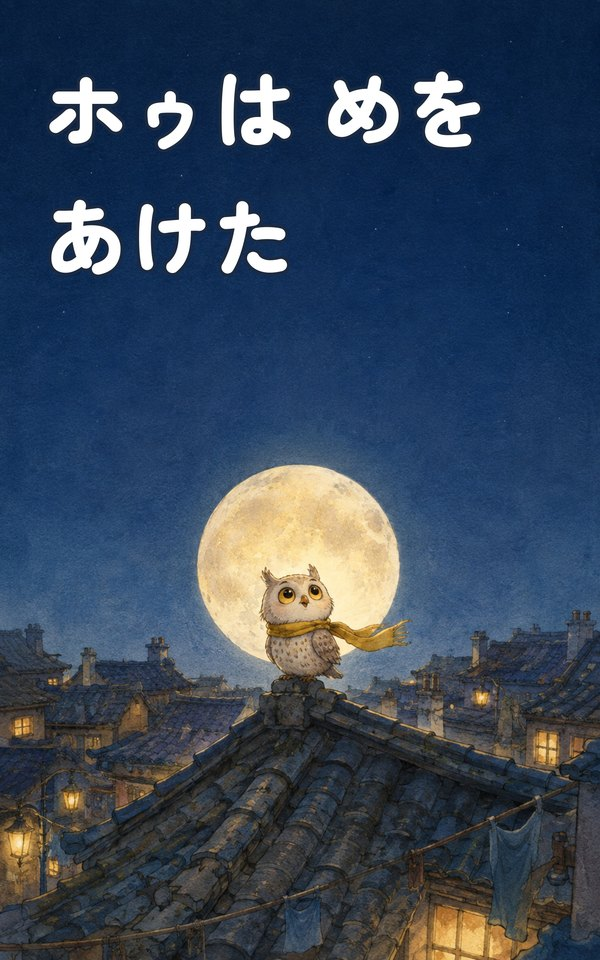
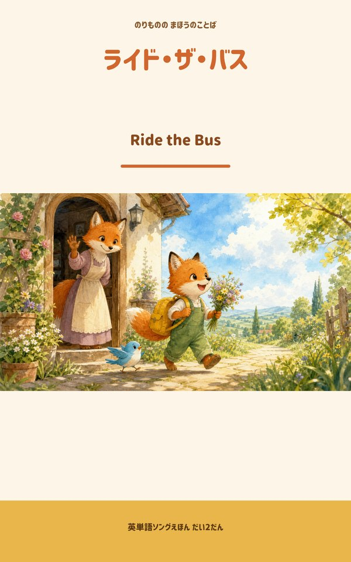
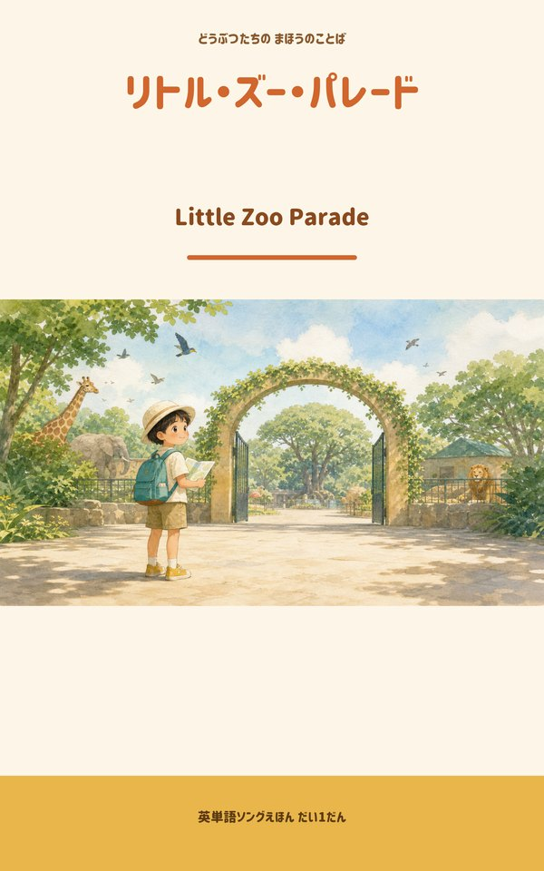

販売中

コギーの石川弁2
石川県の方言「金沢弁」をコギーが可愛くお届け！「きまっし」「あんやと」「がんばりまっし」など毎日使える石川弁が24種。ほっこり方言トークを楽しんで。
LINE STOREで見る →最新の活動はここでチェック！各SNSでも毎回お知らせしています🐾
制作実績とこれからの活動
オリジナルキャラクターによるLINEスタンプを企画・制作。日常・応援・スポーツ実演・特集など多彩なシリーズ、計30パック以上を LINE STORE で配信中。
Instagram・X(Twitter)・Threads でブログ更新やキャラの日常を発信。
Suno AIで制作したオリジナル楽曲をYouTubeで配信中。タキシード姿のコーギー＆シュナウザーが踊るかわいいポップソングをお届け。
🎉 全33パック展開中！日常・応援・スポーツ実演・特集シリーズなど多彩に展開
石川県の方言「金沢弁」をコギーが可愛くお届け！「きまっし」「あんやと」「がんばりまっし」など毎日使える石川弁が24種。ほっこり方言トークを楽しんで。
LINE STOREで見る →
「あつい」「むり」「とけそう」——夏バテフレブルが繰り出す脱力系の夏スタンプ24個。Frenchie Summer Daily。
LINE STOREで見る →
ふわっとかわいいコーギー「コギーちゃん」のきもちを24個に込めた、毎日使える定番スタンプ。
LINE STOREで見る →
白眉毛＆髭のミニチュアシュナウザー「ヒゲおじ」が一言でテンポよく会話を盛り上げる。
LINE STOREで見る →📖 Kindleで全3冊配信中！読み聞かせ向けのオリジナル絵本と、英単語えほんシリーズ

みんな とべるのに、ぼくだけ とべない——。屋根のふちで足がすくむふくろうの子ホゥに、夜の道を通りかかったチワコギーが問いかける。「そこから なにが みえる？」。夕やけから夜明けまでを水彩で描いた、はじめての「できた」の絵本。読み聞かせ4〜6歳向け。
Amazonで見る →
のりものをテーマにした英単語えほん。ふしぎな地図の合言葉を集めながら、bus・car・train…と乗り物のことばに出会っていく。全ページひらがな、英単語にはカタカナ読み付き。
Amazonで見る →
12個の合言葉を集めると、動物たちがすてきなパレードを始める——。bird・fish・lion…と動物のことばを覚えながら進むクエスト型の英単語えほん。シリーズ第1作。
Amazonで見る →🎵 Suno AIで制作したオリジナル楽曲・BGMをYouTubeで全200本公開中！
月明かりだけが照らす、静かな夜の海辺。波音と遠い霧笛にピアノとストリングスを重ねた、眠りに落ちる直前をイメージしたアンビエントBGM。歌詞なしインスト30曲・約90分。
YouTubeで聴く →「The Flower Song」と同じ歌詞から生まれた、もう一つの英語メロディックロックMV。星明かりの花畑と灯る温室、遠くで鳴る鐘が織りなす、インディゴと金色の夜の物語。
YouTubeで聴く →「夜を切り裂いて」と同じ歌詞から生まれた、もう一つの日本語ロックMV。琥珀色の灯りと雨の山道を舞台に、もう一度走り出せる夜明けを描いた別テイク。
YouTubeで聴く →少しずつ広げていく活動